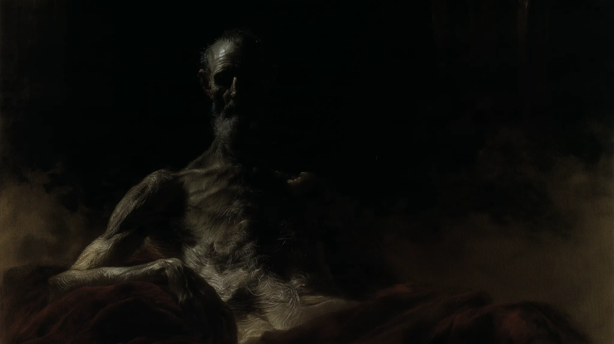
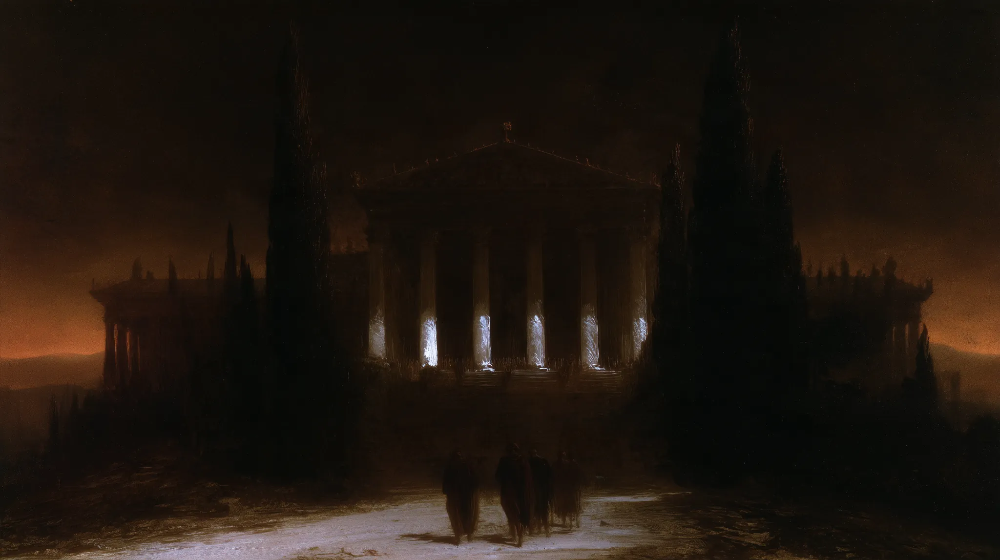

THE DEATH
OF SENECA





A death seen at different distances.
The sequence opens at its ending: an emptied chamber, drapery, a vessel left behind. From there it moves backwards and sideways through a philosopher's face, the approach to a villa, armed figures, witnesses, water, a tablet and an outstretched hand. The eight images follow an associative rhythm rather than strict historical chronology.
This is a visual interpretation of an ancient account, not a reconstruction. The Latin-style lettering appearing in the seventh work was generated as part of the artwork and must not be read as a historical inscription.
What the
text preserves.
In AD 65, Nero ordered Seneca to die. The fullest surviving narrative appears in Tacitus' Annals, Book XV, chapters 60–64. Tacitus describes the arrival of the order, Seneca speaking to his friends, the opening of his veins, poison that failed to take effect, and finally a hot bath.
These are details in a written account, composed after the event. The architecture, the statue above Seneca and the light in the present series are artistic inventions.
imaginem vitae suae relinquere
“to leave behind an image of his life”
Tacitus' account of what Seneca told his friends; a fragment of indirect speech, not an autograph or a verbatim quotation from Seneca. English rendering by DLORIAN.The making
of a death scene.
Seneca's final hours have never had a single visual form. Painters made different choices about scale, witnesses and the philosopher's body.


Rubens brings the philosopher's body forward, lit against darkness. David fills the event with movement, witnesses and elaborately staged grief. In this DLORIAN series, the room occupies much of the image and Seneca is almost lost within it. The contrast is a choice of pictorial distance, not a claim to greater historical accuracy.
 THE OLD FISHERMAN / LOUVRE
THE OLD FISHERMAN / LOUVRE
The face that was never Seneca.
Rubens studied an ancient black-marble statue that was then believed to depict Seneca dying. It is now generally understood as an old fisherman. The mistaken identification influenced one of the best-known paintings of the philosopher's death.
The image came first; its supposed subject followed. The history of Seneca in art is also a history of compelling images attached to uncertain identities.
NATIONALMUSEUM / ART-HISTORICAL ACCOUNT ↗ LOUVRE / SCULPTURE RECORD ↗ Photograph: Jastrow / Wikimedia Commons, public domain.A text transmitted through centuries.
We know Tacitus through manuscripts copied long after the Roman events he described. One surviving witness is Codex Laurentianus Mediceus, Plut. 68.2, held in Florence. It is an eleventh-century manuscript, not a document written in Seneca's lifetime.
EXPLORE THE DIGITIZED MANUSCRIPT ↗THE DEATH
OF SENECA
A complete eight-image visual sequence. Historical sources and other artists’ works are shown separately for context, with their own attributions.
← ALL WORK